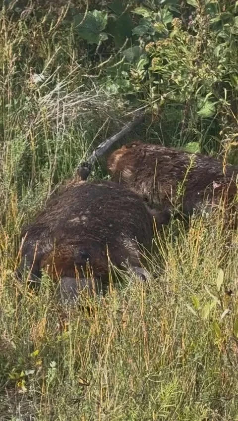

Terrain & Vigie citoyenneSignalement terrain : Incidents fauniques et dépôts sauvages dans le secteur du Plan-Bouchard
Dans le cadre du suivi de terrain et de la documentation continue des milieux naturels locaux à Blainville, un signalement formel a été effectué concernant des incidents fauniques récents ainsi que la présence de dépôts sauvages observés dans le secteur du boisé du Plan-Bouchard.